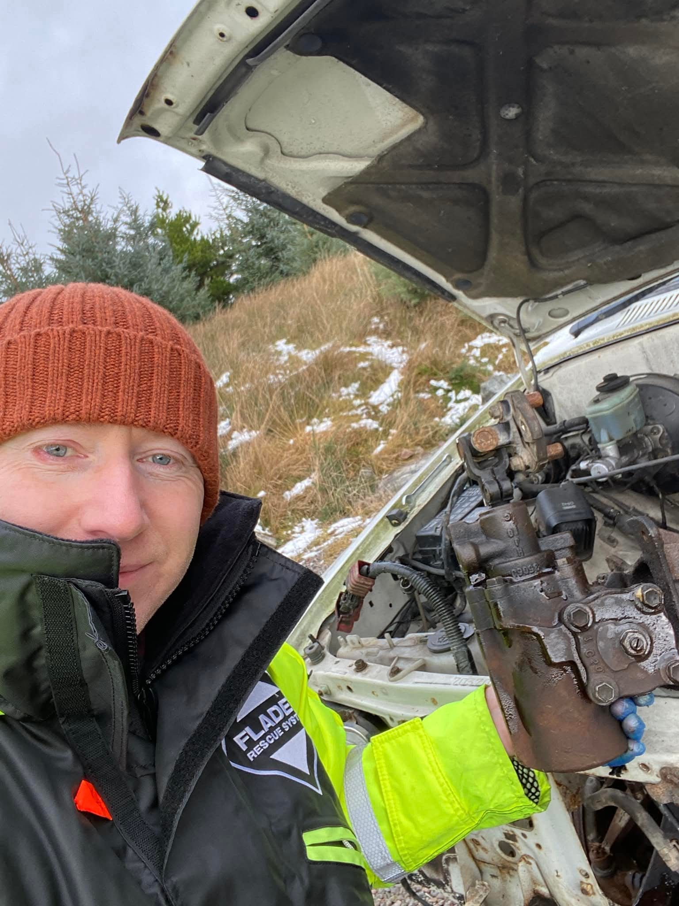

Frontend Mentor
Share menu cards - 'Enduro' design
I created a set of 'enduro' themed cards based on a Frontend Mentor challenge.
9 Jun 2025

Hi, I'm Alex
With the boom in frontend development, I found myself interested in modern-day HTML, CSS, and JavaScript. I worked through freeCodeCamp and moved onto the challenges on Frontend Mentor. Some of my progress and designs are linked below:
Frontend Mentor
I created a set of 'enduro' themed cards based on a Frontend Mentor challenge.
9 Jun 2025
Frontend Mentor
I created a Pokemon themed four card layout in HTML. This was inspired by one of the challenges at frontendmentor.com.
17 Nov 2024

Frontend Mentor
I created a product card page in HTML and CSS based on the character Ichigo from the Anime called Bleach. This was an alternate design for one of the challenges on the Frontend Mentor website.
13 Nov 2024

freeCodeCamp
I completed freeCodeCamp's course on JavaScript Algorithms and Data Structures. This was way tougher than Responsive Web Design. One exercise 'building a spreadsheet app' was so hard to follow. But, overall I was impressed how much you can do with JavaScript.
22 Aug 2024

freeCodeCamp
I completed freeCodeCamp's course on responsive web design. This was quite a long course with a lot of exercises and five certification projects. Read more to see my 'Toyota' theme solutions to the challenges.
16 Feb 2024

While living back in the Highlands of Scotland in 2020-2022, I rekindled my interest in classic cars and spent time working on a few light projects.
Look, it's me wrestling the steering gearbox out of a MK3 Toyota Hilux in the depths of a snowy Highlands winter!
Here are a list of the projects I worked on:

Join these together, and I decided to start a basic qualification in teaching English as a foreign language (TEFL).
I've always found that writing is a good way to consolidate learning, so I've created a blog about TEFL. I'll be sharing what I learn, as well as trying to capture some consulting perspectives on TEFL.
My first blog post is on teaching methods.
My photography is over on my personal blog page.